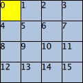

Positioner QML Type
Provides attached properties that contain details on where an item exists in a positioner. More...
| Import Statement: | import QtQuick |
Attached Properties
- index : int
- isFirstItem : bool
- isLastItem : bool
Detailed Description
An object of type Positioner is attached to the top-level child item within a Column, Row, Flow or Grid. It provides properties that allow a child item to determine where it exists within the layout of its parent Column, Row, Flow or Grid.
For example, below is a Grid with 16 child rectangles, as created through a Repeater. Each Rectangle displays its index in the Grid using Positioner.index, and the first item is colored differently by taking Positioner.isFirstItem into account:
Grid { Repeater { model: 16 Rectangle { id: rect width: 30; height: 30 border.width: 1 color: Positioner.isFirstItem ? "yellow" : "lightsteelblue" Text { text: rect.Positioner.index } } } }

Attached Property Documentation
These properties allow the item to determine if it is the first or last item in the positioner, respectively.
Positioner.index : int |
This property allows the item to determine its index within the positioner.